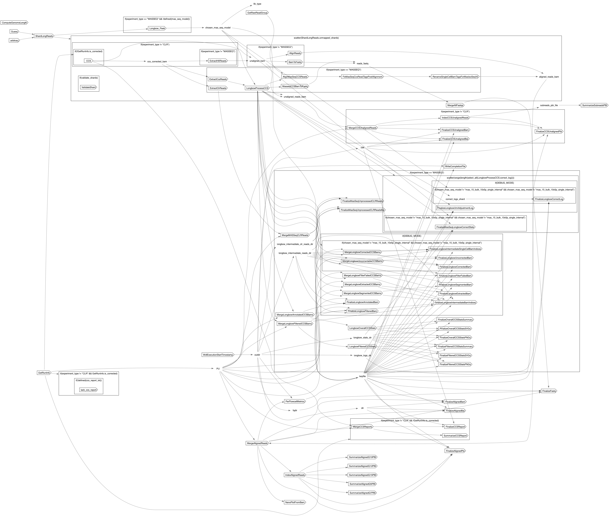

PBFlowcell
PBFlowcell
- description
- The workflow performs the alignment of an SMRT cell's worth of data to a reference. For genomic sequencing data, the workflow also optionally performs CCS correction if the data is from a CCS library but did not get corrected on-instrument. For MAS-seq transcriptome data, this workflow will determine the most likely MAS-seq model, then it will use that model to annotate, segment, and filter the CCS reads. These CCS reads will then be aligned to the reference in trascriptome alignemnt mode. Note: Currently the MAS-seq workflow separates CLR reads, but does not process them.
Inputs
Required
LB(String, required): the value to place in the BAM read group's LB (library) fieldSM(String, required): the value to place in the BAM read group's SM fieldbam(File, required): GCS path to raw subread bamdir_prefix(String, required): directory prefix for output filesexperiment_type(String, required): type of experiment run (CLR, CCS, ISOSEQ, MASSEQ)gcs_out_root_dir(String, required): GCS bucket to store the reads, variants, and metrics filespbi(File, required): GCS path to pbi index for raw subread bamref_map_file(File, required): table indicating reference sequence and auxillary file locations
Optional
ccs_report_txt(File?): GCS path to CCS report txt, required if on-instrument corrected, otherwise CCS is run in this workflow for CCS librariesmas_seq_model(String?): Longbow model to use for MAS-seq data.num_shards(Int?): number of shards into which fastq files should be batchedAlignReads.runtime_attr_override(RuntimeAttr?)BamToFastq.runtime_attr_override(RuntimeAttr?)CCS.runtime_attr_override(RuntimeAttr?)ComputeGenomeLength.runtime_attr_override(RuntimeAttr?)ExtractCcsReads.runtime_attr_override(RuntimeAttr?)ExtractClrReads.runtime_attr_override(RuntimeAttr?)ExtractHifiReads.runtime_attr_override(RuntimeAttr?)FinalizeAlignedBai.name(String?)FinalizeAlignedBai.runtime_attr_override(RuntimeAttr?)FinalizeAlignedBam.name(String?)FinalizeAlignedBam.runtime_attr_override(RuntimeAttr?)FinalizeAlignedPbi.runtime_attr_override(RuntimeAttr?)FinalizeCCSReport.name(String?)FinalizeCCSReport.runtime_attr_override(RuntimeAttr?)FinalizeCCSUnalignedBai.name(String?)FinalizeCCSUnalignedBai.runtime_attr_override(RuntimeAttr?)FinalizeCCSUnalignedBam.name(String?)FinalizeCCSUnalignedBam.runtime_attr_override(RuntimeAttr?)FinalizeCCSUnalignedPbi.runtime_attr_override(RuntimeAttr?)FinalizeFastq.runtime_attr_override(RuntimeAttr?)FinalizeFilteredCCSStatsPNGs.runtime_attr_override(RuntimeAttr?)FinalizeFilteredCCSStatsSVGs.runtime_attr_override(RuntimeAttr?)FinalizeFilteredCCSStatsSummary.name(String?)FinalizeFilteredCCSStatsSummary.runtime_attr_override(RuntimeAttr?)FinalizeLongbowAnnotatedBam.name(String?)FinalizeLongbowAnnotatedBam.runtime_attr_override(RuntimeAttr?)FinalizeLongbowCorrectLog.runtime_attr_override(RuntimeAttr?)FinalizeLongbowCorrectedBam.name(String?)FinalizeLongbowCorrectedBam.runtime_attr_override(RuntimeAttr?)FinalizeLongbowExtractedBam.name(String?)FinalizeLongbowExtractedBam.runtime_attr_override(RuntimeAttr?)FinalizeLongbowFilterFailedBam.name(String?)FinalizeLongbowFilterFailedBam.runtime_attr_override(RuntimeAttr?)FinalizeLongbowFilteredBam.name(String?)FinalizeLongbowFilteredBam.runtime_attr_override(RuntimeAttr?)FinalizeLongbowIntermediateBamIndices.runtime_attr_override(RuntimeAttr?)FinalizeLongbowIntermediateSingleCellBamIndices.runtime_attr_override(RuntimeAttr?)FinalizeLongbowSegmentedBam.name(String?)FinalizeLongbowSegmentedBam.runtime_attr_override(RuntimeAttr?)FinalizeLongbowUmiAdjustmentLog.runtime_attr_override(RuntimeAttr?)FinalizeLongbowUncorrectedBam.name(String?)FinalizeLongbowUncorrectedBam.runtime_attr_override(RuntimeAttr?)FinalizeMasSeqLongbowCorrectStats.runtime_attr_override(RuntimeAttr?)FinalizeMasSeqUnprocessedCLRReads.name(String?)FinalizeMasSeqUnprocessedCLRReads.runtime_attr_override(RuntimeAttr?)FinalizeMasSeqUnprocessedCLRReadsBai.name(String?)FinalizeMasSeqUnprocessedCLRReadsBai.runtime_attr_override(RuntimeAttr?)FinalizeOverallCCSStatsPNGs.runtime_attr_override(RuntimeAttr?)FinalizeOverallCCSStatsSVGs.runtime_attr_override(RuntimeAttr?)FinalizeOverallCCSStatsSummary.name(String?)FinalizeOverallCCSStatsSummary.runtime_attr_override(RuntimeAttr?)FixMasSeqCcsReadTagsPostAlignment.runtime_attr_override(RuntimeAttr?)GetRawReadGroup.runtime_attr_override(RuntimeAttr?)GetRunInfo.runtime_attr_override(RuntimeAttr?)IndexAlignedReads.runtime_attr_override(RuntimeAttr?)IndexCCSUnalignedReads.runtime_attr_override(RuntimeAttr?)LongbowFilteredCCSStats.runtime_attr_override(RuntimeAttr?)LongbowOverallCCSStats.runtime_attr_override(RuntimeAttr?)LongbowProcessCCS.barcode_allow_list(File?)LongbowProcessCCS.barcode_tag(String?)LongbowProcessCCS.corrected_tag(String?)Longbow_Peek.runtime_attr_override(RuntimeAttr?)MasseqCCSBamToFastq.runtime_attr_override(RuntimeAttr?)MergeAlignedReads.runtime_attr_override(RuntimeAttr?)MergeAllFastqs.runtime_attr_override(RuntimeAttr?)MergeCCSReports.runtime_attr_override(RuntimeAttr?)MergeCCSUnalignedReads.runtime_attr_override(RuntimeAttr?)MergeLongbowAnnotatedCCSBams.runtime_attr_override(RuntimeAttr?)MergeLongbowCorrectedCCSBams.runtime_attr_override(RuntimeAttr?)MergeLongbowExtractedCCSBams.runtime_attr_override(RuntimeAttr?)MergeLongbowFilterFailedCCSBams.runtime_attr_override(RuntimeAttr?)MergeLongbowFilteredCCSBams.runtime_attr_override(RuntimeAttr?)MergeLongbowSegmentedCCSBams.runtime_attr_override(RuntimeAttr?)MergeLongbowUncorrectableCCSBams.runtime_attr_override(RuntimeAttr?)MergeMASSeqCLRReads.runtime_attr_override(RuntimeAttr?)NanoPlotFromBam.runtime_attr_override(RuntimeAttr?)RenameSingleCellBamTagsForMasIsoSeqV0.runtime_attr_override(RuntimeAttr?)ShardLongReads.runtime_attr_override(RuntimeAttr?)SummarizeAlignedQ10PBI.runtime_attr_override(RuntimeAttr?)SummarizeAlignedQ12PBI.runtime_attr_override(RuntimeAttr?)SummarizeAlignedQ15PBI.runtime_attr_override(RuntimeAttr?)SummarizeAlignedQ5PBI.runtime_attr_override(RuntimeAttr?)SummarizeAlignedQ7PBI.runtime_attr_override(RuntimeAttr?)SummarizeCCSReport.runtime_attr_override(RuntimeAttr?)ValidateShard.runtime_attr_override(RuntimeAttr?)LongbowProcessCCS.AggregateCorrectLogStats.runtime_attr_override(RuntimeAttr?)LongbowProcessCCS.Extract.bam_pbi(File?)LongbowProcessCCS.Extract.leading_adapter(String?)LongbowProcessCCS.Extract.runtime_attr_override(RuntimeAttr?)LongbowProcessCCS.Extract.start_offset(Int?)LongbowProcessCCS.Extract.trailing_adapter(String?)LongbowProcessCCS.t_01_Peek.runtime_attr_override(RuntimeAttr?)LongbowProcessCCS.t_02_Annotate.runtime_attr_override(RuntimeAttr?)LongbowProcessCCS.t_03_Filter.bam_pbi(File?)LongbowProcessCCS.t_03_Filter.model(String?)LongbowProcessCCS.t_03_Filter.runtime_attr_override(RuntimeAttr?)LongbowProcessCCS.t_04_Segment.model(String?)LongbowProcessCCS.t_04_Segment.runtime_attr_override(RuntimeAttr?)LongbowProcessCCS.t_05_RemoveMasSeqTruncatedReads.runtime_attr_override(RuntimeAttr?)LongbowProcessCCS.t_07_PadUMI.runtime_attr_override(RuntimeAttr?)LongbowProcessCCS.t_08_PadCBC.runtime_attr_override(RuntimeAttr?)LongbowProcessCCS.t_09_Correct.barcode_freq_list(File?)LongbowProcessCCS.t_09_Correct.runtime_attr_override(RuntimeAttr?)LongbowProcessCCS.t_10_AdjustUmiSequenceWithAdapterAlignment.runtime_attr_override(RuntimeAttr?)PerFlowcellMetrics.AlignedFlagStats.runtime_attr_override(RuntimeAttr?)PerFlowcellMetrics.AlignedReadMetrics.runtime_attr_override(RuntimeAttr?)PerFlowcellMetrics.FFCoverageFullDist.keyfile(File?)PerFlowcellMetrics.FFCoverageFullDist.runtime_attr_override(RuntimeAttr?)PerFlowcellMetrics.FFCoverageGlobalDist.keyfile(File?)PerFlowcellMetrics.FFCoverageGlobalDist.runtime_attr_override(RuntimeAttr?)PerFlowcellMetrics.FFCoverageQuantized.keyfile(File?)PerFlowcellMetrics.FFCoverageQuantized.runtime_attr_override(RuntimeAttr?)PerFlowcellMetrics.FFCoverageQuantizedCsi.keyfile(File?)PerFlowcellMetrics.FFCoverageQuantizedCsi.runtime_attr_override(RuntimeAttr?)PerFlowcellMetrics.FFCoverageQuantizedDist.keyfile(File?)PerFlowcellMetrics.FFCoverageQuantizedDist.runtime_attr_override(RuntimeAttr?)PerFlowcellMetrics.FFCoverageRegionDist.keyfile(File?)PerFlowcellMetrics.FFCoverageRegionDist.runtime_attr_override(RuntimeAttr?)PerFlowcellMetrics.FFCoverageRegions.keyfile(File?)PerFlowcellMetrics.FFCoverageRegions.runtime_attr_override(RuntimeAttr?)PerFlowcellMetrics.FFCoverageRegionsCsi.keyfile(File?)PerFlowcellMetrics.FFCoverageRegionsCsi.runtime_attr_override(RuntimeAttr?)PerFlowcellMetrics.FFDepthSummaries.keyfile(File?)PerFlowcellMetrics.FFDepthSummaries.runtime_attr_override(RuntimeAttr?)PerFlowcellMetrics.FFYieldAligned.keyfile(File?)PerFlowcellMetrics.FFYieldAligned.runtime_attr_override(RuntimeAttr?)PerFlowcellMetrics.MakeChrIntervalList.runtime_attr_override(RuntimeAttr?)PerFlowcellMetrics.MosDepth.runtime_attr_override(RuntimeAttr?)PerFlowcellMetrics.MosDepth.window_size(Int?)PerFlowcellMetrics.SummarizeDepth.runtime_attr_override(RuntimeAttr?)
Defaults
DEBUG_MODE(Boolean, default=false): [default valued] enables debugging tasks / subworkflows (default: false)drop_per_base_N_pulse_tags(Boolean, default=true)validate_shards(Boolean, default=false)AlignMasSeqCCSReads.prefix(String, default="out")AlignReads.prefix(String, default="out")CCS.all(Boolean, default=true)CCS.by_strand(Boolean, default=false)CCS.kinetics(Boolean, default=false)ExtractHifiReads.prefix(String, default="hifi")LongbowProcessCCS.same_barcode_per_read(Boolean, default=false)LongbowProcessCCS.shard_width(Int, default=25)MergeAllFastqs.prefix(String, default="merged")ShardLongReads.num_threads(Int, default=8)ShardLongReads.prefix(String, default="shard")SummarizeSubreadsPBI.qual_threshold(Int, default=0)WdlExecutionStartTimestamp.date_format(String, default="%Y%m%d_%H%M%S_%N")LongbowProcessCCS.Extract.base_padding(Int, default=2)LongbowProcessCCS.Extract.num_cpus(Int, default=2)LongbowProcessCCS.t_01_Peek.n(Int, default=100)LongbowProcessCCS.t_02_Annotate.num_cpus(Int, default=8)LongbowProcessCCS.t_03_Filter.num_cpus(Int, default=2)LongbowProcessCCS.t_04_Segment.num_cpus(Int, default=2)LongbowProcessCCS.t_07_PadUMI.padding(Int, default=2)LongbowProcessCCS.t_08_PadCBC.padding(Int, default=2)LongbowProcessCCS.t_09_Correct.ccs_lev_dist_threshold(Int, default=2)LongbowProcessCCS.t_09_Correct.clr_lev_dist_threshold(Int, default=2)LongbowProcessCCS.t_10_AdjustUmiSequenceWithAdapterAlignment.existing_umi_tag(String, default="ZU")LongbowProcessCCS.t_10_AdjustUmiSequenceWithAdapterAlignment.new_umi_tag(String, default="JX")
Outputs
ccs_report(File?)ccs_zmws_input(Float?)ccs_zmws_pass_filters(Float?)ccs_zmws_fail_filters(Float?)ccs_zmws_shortcut_filters(Float?)ccs_zmws_pass_filters_pct(Float?)ccs_zmws_fail_filters_pct(Float?)ccs_zmws_shortcut_filters_pct(Float?)polymerase_read_length_mean(Float)polymerase_read_length_N50(Float)subread_read_length_mean(Float)subread_read_length_N50(Float)fq(File?)ccs_bam(File?)ccs_pbi(File?)aligned_bam(File)aligned_bai(File)aligned_pbi(File)num_reads(Float)num_bases(Float)raw_est_fold_cov(Float)read_length_mean(Float)read_length_median(Float)read_length_stdev(Float)read_length_N50(Float)read_qual_mean(Float)read_qual_median(Float)num_reads_Q5(Float)num_reads_Q7(Float)num_reads_Q10(Float)num_reads_Q12(Float)num_reads_Q15(Float)aligned_num_reads(Float)aligned_num_bases(Float)aligned_frac_bases(Float)aligned_est_fold_cov(Float)aligned_read_length_mean(Float)aligned_read_length_median(Float)aligned_read_length_stdev(Float)aligned_read_length_N50(Float)average_identity(Float)median_identity(Float)library_type(String)longbow_overall_ccs_stats_plots_png(String?)longbow_overall_ccs_stats_plots_svg(String?)longbow_overall_ccs_stats(File?)longbow_filtered_ccs_stats_plots_png(String?)longbow_filtered_ccs_stats_plots_svg(String?)longbow_filtered_ccs_stats(File?)
Dot Diagram
